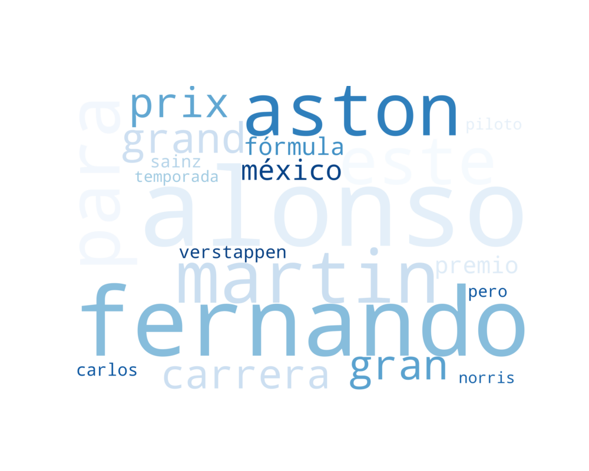
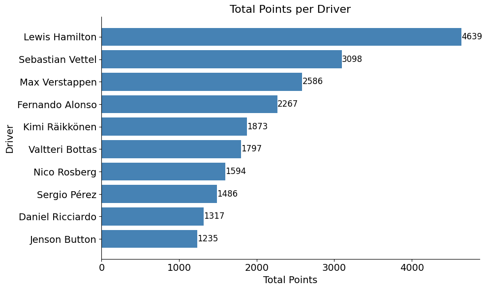
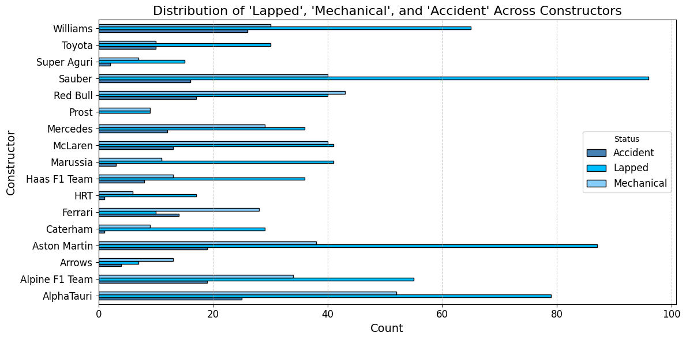

Note: You should remove these instructions once you have read and understood them. They should not be included in your final submission.
Remember: Exactly what do you put on this page will be specific you your project and data. Some things might “make more sense” on one page rather than another, depending on your workflow. Organize your project in a logical way that makes the most sense to you.
Suggested page structure
Here’s one suggested structure for organizing your technical pages. You can adjust this as needed:
Audience:Remember that these are written for a technical audience. Assume they have completed the DSAN program, but would appreciate refreshers of the important concepts.
Introduction and Motivation: Briefly outline your plan. What are you doing on this page, and why? Provide context and explain the goals of your analysis.
Overview of Methods: Give a concise explanation of the methods used. For example, if using K-Means clustering, describe what it is, how it works, the inputs and outputs, and key hyperparameters.
Code: Include the code you used to implement your workflow.
Summary and Interpretation of Results: Summarize your findings, interpret the results, and discuss their technical implications.
What to address
The following is a list of some of the things you should address on this page. This list is not exhaustive, and you should use your judgment to decide what is most relevant to your project.
The EDA (Exploratory Data Analysis) tab in your portfolio serves as a crucial foundation for your project. It provides a thorough overview of the dataset, highlights patterns, identifies potential issues, and prepares the data for further analysis. Follow these instructions to document your EDA effectively:
The goal of EDA is to gain a deeper understanding of the dataset and its relevance to your project’s objectives. It involves summarizing key data characteristics, identifying patterns, anomalies, and preparing for future analysis phases.
Here are suggestions for things to include on this page
Univariate Analysis:
Numerical Variables:
Provide summary statistics (mean, median, standard deviation).
Visualize distributions using histograms or density plots.
Categorical Variables:
Present frequency counts and visualize distributions using bar charts or pie charts.
Key Insights:
Highlight any notable trends or patterns observed.
Bivariate and Multivariate Analysis:
Correlation Analysis:
Analyze relationships between numerical variables using a correlation matrix.
Visualize with heatmaps or pair plots and discuss any strong correlations.
Crosstabulations:
For categorical variables, use crosstabs to explore relationships and visualize them with grouped bar plots.
Feature Pairings:
Analyze relationships between key variables, particularly those related to your target.
Visualize with scatter plots, box plots, or violin plots.
Data Distribution and Normalization:
Skewness and Kurtosis:
Analyze and discuss the distribution of variables.
Apply transformations (e.g., log transformation) if needed for skewed data.
Normalization:
Apply normalization or scaling techniques (e.g., min-max scaling, z-score).
Document and visualize the impact of normalization.
Statistical Insights:
Conduct basic statistical tests (e.g., T-tests, ANOVA, chi-square) to explore relationships between variables.
Summarize the statistical results and their implications for your analysis.
Data Visualization and Storytelling:
Visual Summary:
Present key insights using charts and visualizations (e.g., Matplotlib, Seaborn, Plotly).
Ensure all visualizations are well-labeled and easy to interpret.
Interactive Visualizations (Optional):
Include interactive elements (e.g., Plotly, Bokeh) to allow users to explore the data further.
Conclusions and Next Steps:
Summary of EDA Findings:
Highlight the main takeaways from the EDA process (key trends, patterns, data quality issues).
Implications for Modeling:
Discuss how your EDA informs the next steps in your project (e.g., feature selection, data transformations).
Outline any further data cleaning or preparation required before moving into modeling.
Code
Provide the source code used for this section of the project here.
If you’re using a package for code organization, you can import it at this point. However, make sure that the actual workflow steps—including data processing, analysis, and other key tasks—are conducted and clearly demonstrated on this page. The goal is to show the technical flow of your project, highlighting how the code is executed to achieve your results.
If relevant, link to additional documentation or external references that explain any complex components. This section should give readers a clear view of how the project is implemented from a technical perspective.
Remember, this page is a technical narrative, NOT just a notebook with a collection of code cells, include in-line Prose, to describe what is going on.
Word Cloud
for each driver
top 10 most frequent words in their respective news articles
Code
# import required librariesfrom wordcloud import WordCloud, STOPWORDSimport matplotlib.pyplot as pltimport jsonimport osimport pandas as pdimport matplotlib.pyplot as pltimport matplotlib.lines as mlinesfrom matplotlib.cm import get_cmapimport seaborn as sns
Code
# Function to generate a word cloud for a single JSON filedef generate_wordcloud_top_n(file_path, output_folder, top_n=10):def plot_cloud(wordcloud, output_file): plt.figure(figsize=(10, 8)) plt.imshow(wordcloud, interpolation='bilinear') plt.axis("off") plt.savefig(output_file) plt.close()# Read the text from the JSON filewithopen(file_path, 'r', encoding='utf-8') asfile: data = json.load(file)# Concatenate all text content if it's a JSON dictionaryifisinstance(data, dict): my_text =' '.join(data.values())# Generate word cloud to extract word frequencies wordcloud = WordCloud( width=3000, height=2000, random_state=1, background_color="white", colormap="Blues", collocations=False, stopwords=STOPWORDS ).generate(my_text)# Extract word frequencies and get the top N words word_frequencies = wordcloud.words_ top_words =dict(list(word_frequencies.items())[:top_n])# Generate a new word cloud with only the top N words top_wordcloud = WordCloud( width=3000, height=2000, random_state=1, background_color="white", colormap="Blues", collocations=False, stopwords=STOPWORDS ).generate_from_frequencies(top_words)# Save and display the word cloud file_name = os.path.basename(file_path).replace('.json', '_wordcloud.png') output_file = os.path.join(output_folder, file_name) plot_cloud(top_wordcloud, output_file)# Function to process all JSON files in a folderdef generate_wordclouds_for_folder(input_folder, output_folder, top_n=10): os.makedirs(output_folder, exist_ok=True) for file_name in os.listdir(input_folder):if file_name.endswith('.json'): # Process only JSON files file_path = os.path.join(input_folder, file_name)try: generate_wordcloud_top_n(file_path, output_folder, top_n)exceptExceptionas e:print(f"Error processing file {file_path}: {e}")
# add each word cloud and interpretation # change the theme
word clouds

Alonso
Code
# number of points by driverdata = pd.read_csv("../../data/processed-data/driver_standings_2000_2023.csv")# Calculate total points for each drivertotal_points = data.groupby("driverName")["Points"].sum().reset_index()top_10_drivers = total_points.sort_values(by="Points", ascending=False).head(10)# Plot the bar chartplt.figure(figsize=(10, 6))bars = plt.barh(top_10_drivers["driverName"], top_10_drivers["Points"], color="steelblue")for bar in bars: plt.text( bar.get_width() +1, bar.get_y() + bar.get_height() /2, f'{int(bar.get_width())}', va='center', fontsize=12, color='black' )plt.xticks(fontsize =14)plt.yticks(fontsize =14)plt.xlabel("Total Points", fontsize=14)plt.ylabel("Driver", fontsize=14)plt.title("Total Points per Driver", fontsize=16)plt.gca().invert_yaxis() plt.tight_layout()plt.gca().spines['top'].set_visible(False)plt.gca().spines['right'].set_visible(False)plt.show()

Code
total_points = data.groupby("Constructor_Name")["Points"].sum().reset_index()constructors = total_points.sort_values(by="Points", ascending=False).head(10)# Plot the bar chartplt.figure(figsize=(10, 6))bars = plt.barh(constructors["Constructor_Name"], constructors["Points"], color="steelblue")for bar in bars: plt.text( bar.get_width() +1, bar.get_y() + bar.get_height() /2, f'{int(bar.get_width())}', va='center', fontsize=12, color='black' )plt.xticks(fontsize =14)plt.yticks(fontsize =14)plt.xlabel("Total Points", fontsize=14)plt.ylabel("Constructor", fontsize=14)plt.title("Total Points per Constructor", fontsize=16)plt.gca().invert_yaxis() plt.tight_layout()plt.gca().spines['top'].set_visible(False)plt.gca().spines['right'].set_visible(False)plt.show()
# distribution of "Lapped", "Mechanical", "Accident" across Constructorsdata = pd.read_csv("../../data/processed-data/race_info.csv")
Code
# Filter the data for specific statusesfiltered_data = data[data["status"].isin(["Lapped", "Mechanical", "Accident"])]# Group by constructor and status to get countsstatus_distribution = filtered_data.groupby(["constructorName", "status"]).size().unstack(fill_value=0)# Plot the distribution with horizontal barsstatus_distribution.plot( kind="barh", figsize=(12, 6), color=['steelblue', 'deepskyblue', 'lightskyblue'], edgecolor="black")# Customize the plotplt.title("Distribution of 'Lapped', 'Mechanical', and 'Accident' Across Constructors", fontsize=16)plt.xlabel("Count", fontsize=14)plt.ylabel("Constructor", fontsize=14)plt.xticks(fontsize=12)plt.yticks(fontsize=12)plt.legend(title="Status", fontsize=12)plt.grid(axis="x", linestyle="--", alpha=0.7)plt.tight_layout()# Display the plotplt.show()

Code
# Filter the data for specific statusesfiltered_data = data[data["status"].isin(["Lapped", "Mechanical", "Accident"])]# Group by constructor and status to get countsstatus_distribution = filtered_data.groupby(["constructorName", "status"]).size().unstack(fill_value=0)# Plot the distribution as a stacked horizontal bar chartstatus_distribution.plot( kind="barh", figsize=(12, 6), color=['steelblue', 'deepskyblue', 'lightskyblue'], edgecolor="black", stacked=True# Make the bars stacked)# Customize the plotplt.title("Distribution of 'Lapped', 'Mechanical', and 'Accident' Across Constructors", fontsize=16)plt.xlabel("Count", fontsize=14)plt.ylabel("Constructor", fontsize=14)plt.xticks(fontsize=12)plt.yticks(fontsize=12)plt.legend(title="Status", fontsize=12, loc="upper right")plt.grid(axis="x", linestyle="--", alpha=0.7)plt.tight_layout()# Display the plotplt.show()